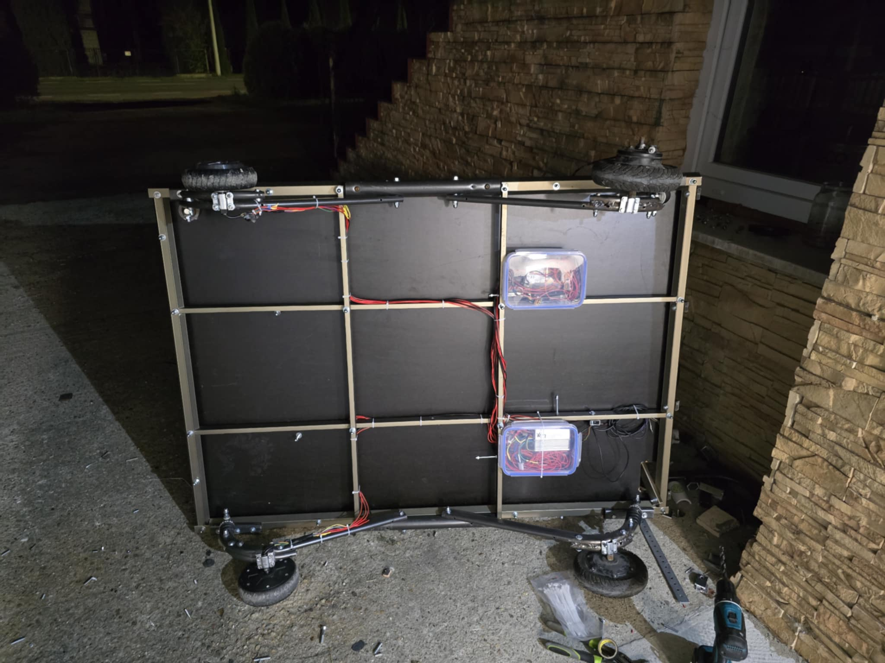
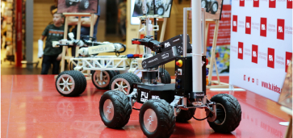
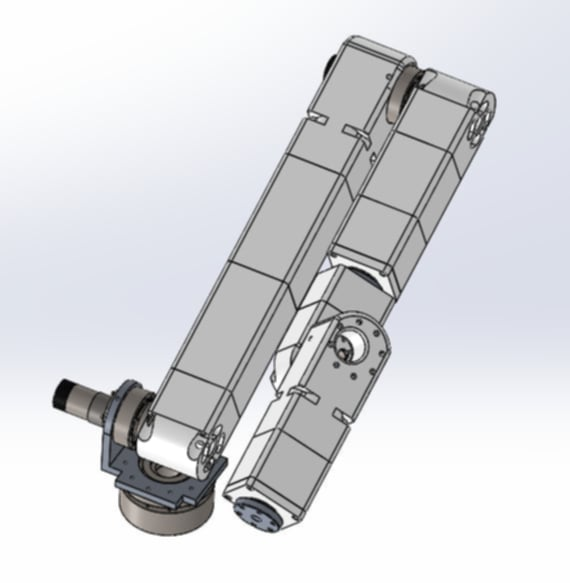
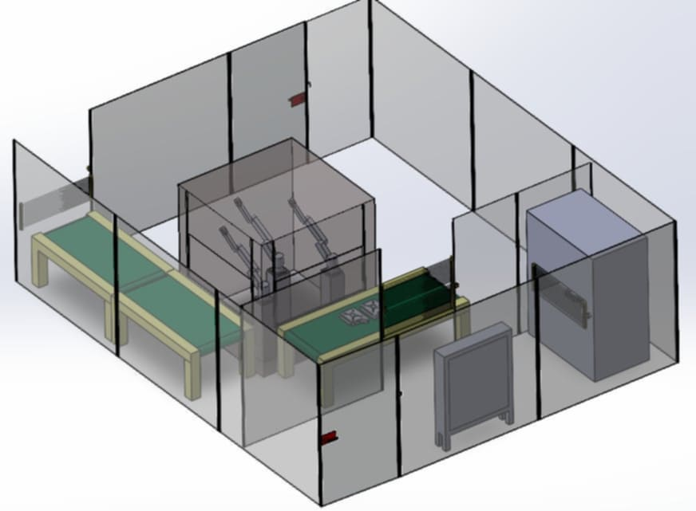
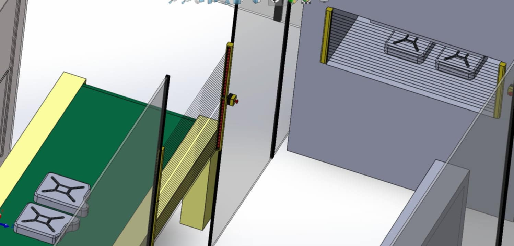
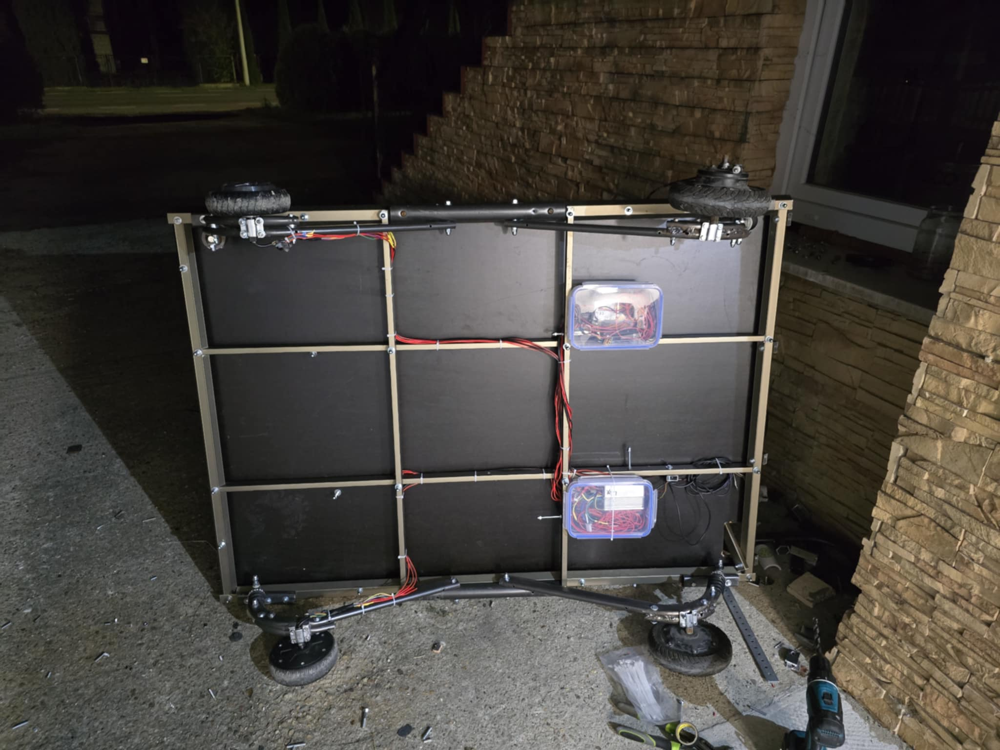
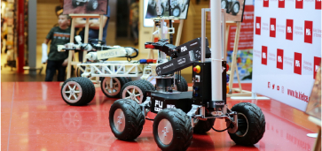
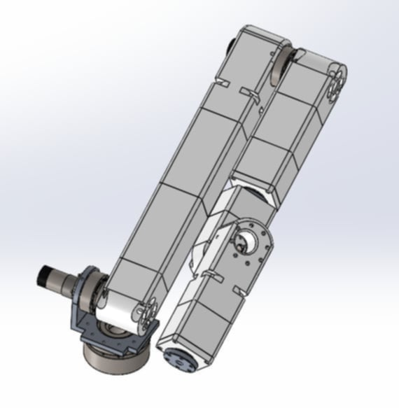
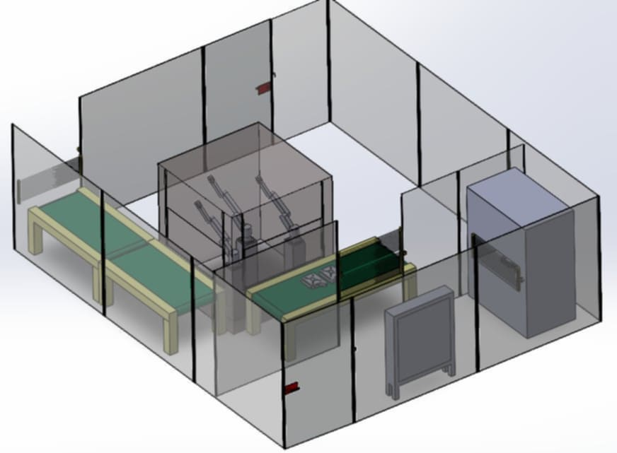
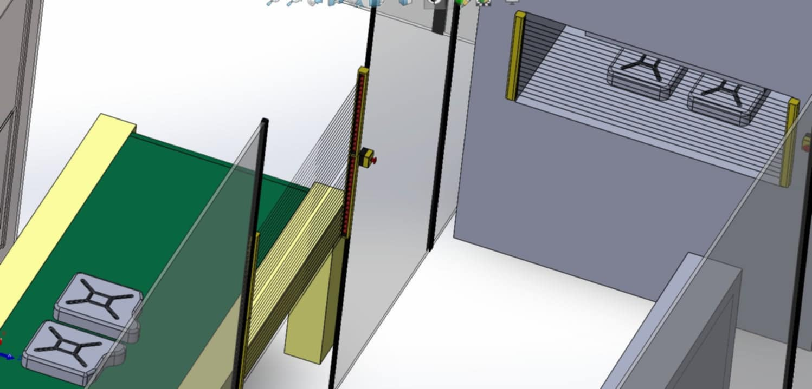

Portfolio Paweł Supa
Specjalizacja: Elektrotechnika i automatyka przemysłowa
Telefon: +48 739 9100 137E-mail: pawel.supa2@gmail.com
GALERIA


 









O MNIE
Studiuję Elektronikę i Automatykę Przemysłową na Politechnice Świętokrzyskiej, gdzie na codzień rozwijam swoje umiejętności i realizuję innowacyjne projekty. Jestem aktywnym członkiem koła naukowego Fupla oraz zasiadam w komisji programowej mojego kierunku, wspierając rozwój edukacji technicznej. Ponadto w przy wielu okazjach miałem okazję reprezentować Politechnikę na targach nauki oraz w szkołach na prezentaci uczelni.
Posiadam praktyczne doświadczenie w montażu i okablowaniu szaf elektrycznych zgodnie ze schematami technicznymi oraz planami elektrycznymi. Tworzę dokumentacje jakościowe, a także zajmuję się instalacją i podłączaniem urządzeń elektrycznych oraz komponentów automatyki przemysłowej. Pracowałem z systemami PLC S7-1200, gdzie pozyskiwałem dane z kart analogowych dla termopar, wizualizując je w systemie SCADA ASIX.
Moje umiejętności obejmują pracę z programami i technologiami: AUTODESK AUTOCAD, TIA PORTAL, SOLIDWORKS, IFIX oraz MODBUS TCP-IP i RTU.
Posiadam również Europejski Certyfikat Umiejętności Komputerowego Wspomagania Projektowania – ECDL CAD, potwierdzający moje kompetencje w zakresie projektowania technicznego.